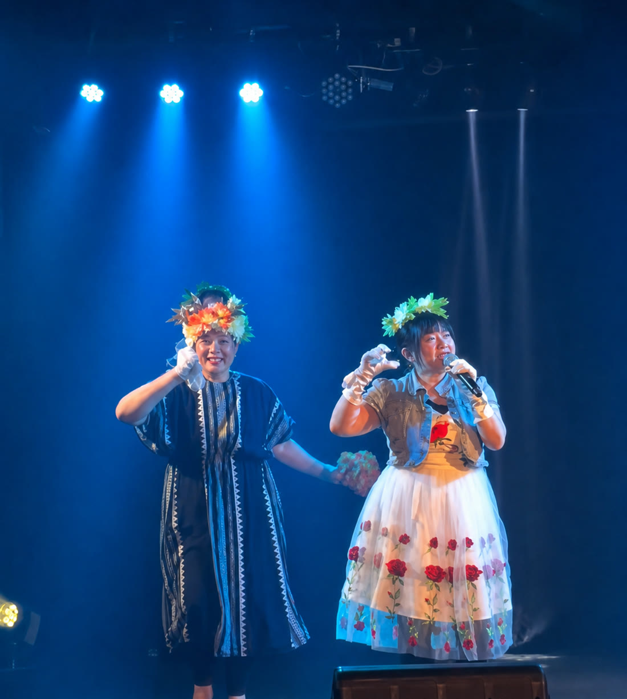
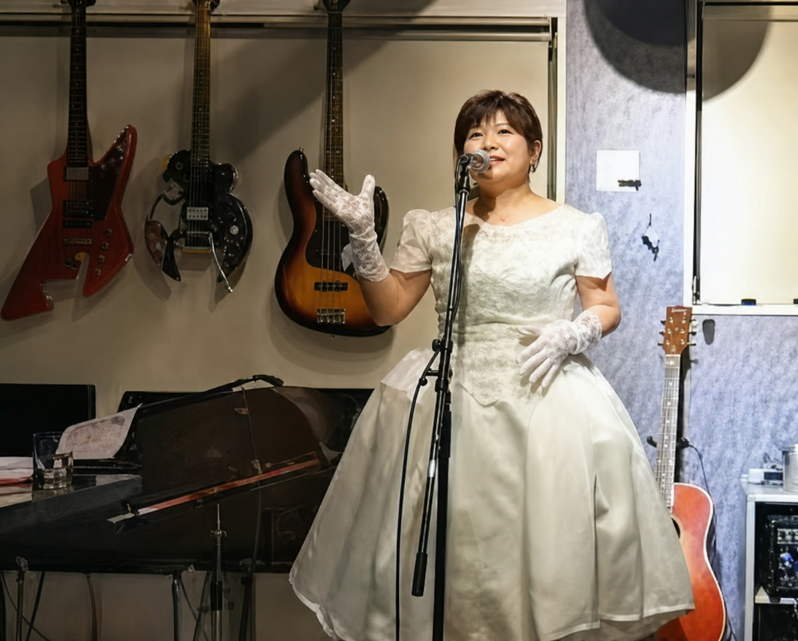
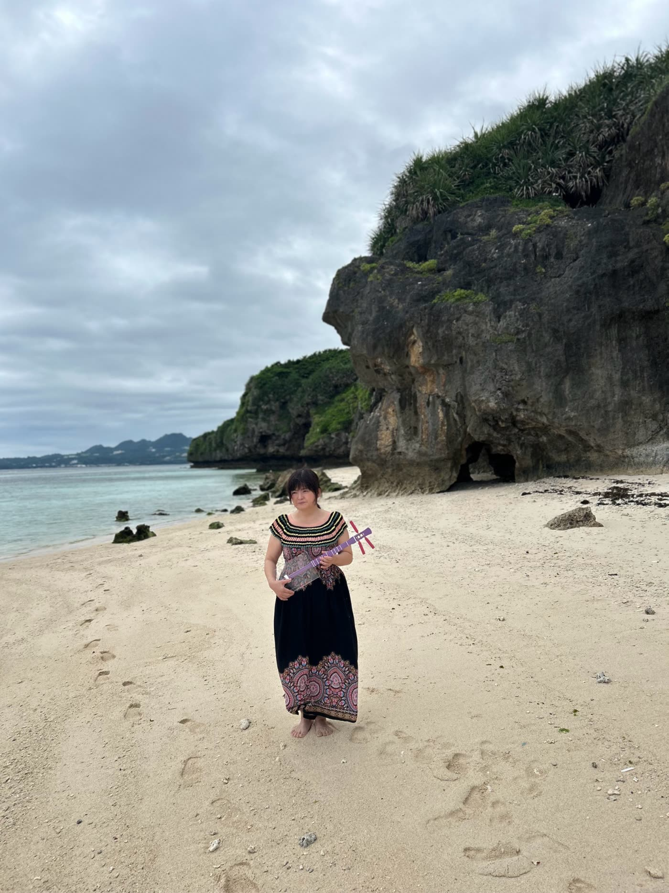

STAGE
ステージで歌う
照明の下、衣装をまとって。80年代のアイドルの曲を、そのころの空気ごとお届けしています。
Works
ステージ、浜辺、ラジオのスタジオ。紫あゆなが歌ってきた場所です。
Gallery

照明の下、衣装をまとって。80年代のアイドルの曲を、そのころの空気ごとお届けしています。

お客さまとの距離が近い会場では、歌のあいだのお話も楽しみのひとつです。

白い砂とエメラルドの海。沖縄で生まれた楽器の音が、いちばんよく似合う場所です。

公式LINEのお問い合わせの画面でも使っているお写真です。歌う場所は、ステージだけとはかぎりません。
オキラジ、FM読谷、FMコザの3局で番組を担当しています。マイクの前では、聴いてくださる方おひとりに話しかけるつもりで。
YouTube
公式YouTubeチャンネルに載せている動画です。
Official Social
次にどこで歌うかは、公式LINEとSNSでお知らせしています。